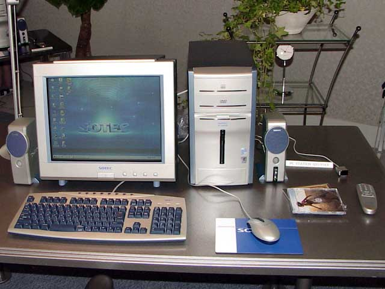
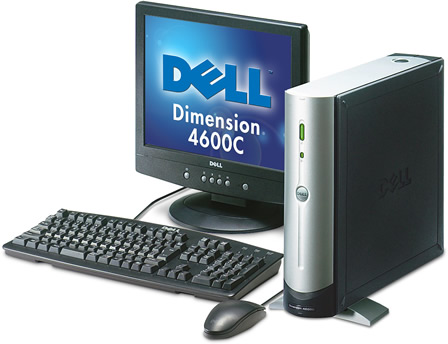

2002年を思い出す
2012年の暮れ。10年前の自分は何をしていたのか振り返る。
10年前を振り返る前に
2012年12月12日。たまたま12並びの日だが、ただいまこのページを作成し、文章を書き始めたところである。まずは、なぜこのような記事を書こうと思ったかについて触れておく。
本稿執筆時点の僕は、大学4年生である。2012年6月に就職活動が終わり、前期で授業の単位も取り終えたので、9月からはバイトばかりでブラブラしていた。
11月の下旬、ある人からメールをいただいた。2002～2003年頃、「ソラノハシラノアナ」というポケモンのファンサイトを運営していた「流星群」さんという方からであった。サイト名とハンドルネームに見覚えがあり、2002年当時を思い出すと色々懐かしくなった。
流星群さんは就職活動中で、自己分析の一環として10年前を振り返り、このサイトのことを思い出してくださったそうである。流星群さんは最近「語り部の憩い」というサイトを開設し、10年前のことを書き始めている。
このサイトは2012年10月で、開設から10年目を迎えた。個人的にも「10年前」のことは特に強く印象に残っている。学生生活も終わる今年、一つの区切りとして今までのことを振り返ってみようと思い、こんなページを開いてみた次第である。パソコンやネットでのことを中心に振り返っていこうと思う。思い出しながら書き散らしているので、読みづらいかもしれないがご了承を。
10年以上前のことから振り返る
2002年前後のことを振り返るために、まずはその前、自分がパソコンやインターネットと出会ったところから思い出してみたいと思う。
パソコンは元々、父が購入していた。1990年頃、父は「これからこのパソコンとやらは急速に進化して普及するだろう」と考え、東芝の Dynabook (ノートパソコン) を約40万円で購入し、パソコンを勉強し始めたそうである。当時としては個人でパソコンを持っている人はまだまだ珍しかったようで、会社でも「パソコンに詳しい人」として有名になったんだとか。OS は一太郎のあと Windows 3.1 にしたようだ。
20年以上も前のことを最近聞いたので、父の記憶も曖昧になっているが、このダイナブックとは、Dynabook EZ のことであろうか。そうすると1992年頃の話になるが、正確には不明。ちなみにこのノートパソコンは2000年頃に僕が触っていたら重要なシステムファイルを削除してしまったようで、お釈迦にしてししまった…w。
1991年、僕が生まれる。1993年頃には IBM の横置き型デスクトップパソコンを購入し、Windows 95 をインストールしてからは、僕も「ペイント」で遊ぶ程度にパソコンを触らせてもらうようになった。
1998年頃、OS は Windows 98 にアップグレードし、父は家族の「ホームページ (言い方が時代…w)」を開設する。スペースはジオシティーズかどこかで、初めからホームページビルダーを使用していたようである。この頃はまだダイヤルアップ接続でインターネットに接続していた記憶がある。ピーガラガラガラ…でインターネットに繋ぎ、ページを読み込んだらオフライン作業！みたいなことをしていたw。
1999年頃、この頃に初代ポケモンを始め、裏技を調べたかった僕は、父に使い方を教わりながらインターネットに接続したことを覚えている。このとき「ポケモン大好きクラブ」などのポケモンサイトを印刷して、何度も読み返していた。この印刷した紙に1999年と日付が入っているので、少なくとも1999年にはポケモンサイトを見始めていたようだ。
それから僕も自分のページを作りたいと思うようになり、まずは紙に設計図や内容を書いてから、父に「こんな風に作りたい！だからパソコンやらせて！」とお願いしていた記憶がある。ISDN 回線にしたかどうかというこの当時だったが、父にアドバイスをもらいながら、自分のページを作り始めるようになった。当時は父が作っていた家族のウェブサイトの中の1ページとして、「自分の部屋」みたいなモノを作っていた。ページを開くたびにテーブルメニューが DHTML (ダイナミック HTML!!) で右からスライドして出てくる、という使いにくさあふれるサイトだったw。
2000年頃、「9万9800円パソコン」で有名だったソーテックのデスクトップ (PC Station シリーズ) を購入。青と銀の大きなタワー型の本体で、CPU は Pentium 3 の 700MHz か 800MHz とかだった記憶。CPU が「GHz」ではなく「メガ」なことに驚き！形的にはこんなモノだった。

{kind=link}
もう少しすると ADSL 回線になり、「どれだけ使っても定額！ネットし放題！」と大興奮した覚えがある。
ADSL が人生の転機か
我が家に ADSL 回線が来た2000年頃以降、僕はそれまでゲームをしていた時間を徐々にパソコンに回すようになり、だんだんとゲームの割合が少なくなっていった覚えがある。ゲームといえば、この頃は「アクションリプレイ (現在のコードフリーク AR)」の Vol. 1～8 あたりが不定期発行されていた時期で、Vol. 7 のポケモン金銀特集に熱中して、GB 用の PAR3 で秘技コードを試しまくっていた覚えがある。最近この当時のアクションリプレイをヤフオクで見付けて再度購入してみたのだが、ドリームキャストが出る出ないなんて話が書いてあったりで、時代を感じるw。
さてさて、ADSL。基本料は高くなるものの、ネットが定額。やらないわけにはいかない！というワケでネットを使いまくっていた。ポケモンサイトを中心に見て回りながら、家族のウェブスペース内に作っていた「自分の部屋」はどんどん更新を続けていた。
2001年から2002年頃には、Flash にハマっていた時期でもあった。小学校の友達とも話題にしており、棒人間の格闘アクション「小小 XiaoXiao」シリーズや、色々とヤバい「ラサイト」、テキストトゥスピーチで喋るオウムのアニメ「Outside」、森野あるじさんの「Mother Mars」などにハマっていた。「8頭身」や「>>1 さん」などの2ちゃんねる系の AA キャラモノの Flash も流行っていた。ラーメンズのネタを流用した「千葉！滋賀！佐賀！」や「トゥートゥートゥマシェリー」などもこの頃見ていた。
余談だが、2ちゃんねる自体を知ったのも Flash アニメと同時ぐらい。何かの拍子に CC さくら板を覗いてしまい、当時のお兄さんたちが「さくらタソの ○○○ 食べたい」などの過激な書き込みをしていて驚いた記憶があるw。小学生には理解しがたい書き込みばかりだったが、10年も経つと「ああこんなもんか」と妙に分かってしまったり…。汚れてしまった…w。
当時10歳。見たものは真似したくなる年頃。Flash も例外ではなく、「作りたい！」と父にせがんで、Flash 5 を買ってもらった (少ししてから Flash MX も買ってもらった)。2002年頃には、「Outside」をモロパクリしたような設定のアニメを作ったりしていた。
そしてそれがちょっとした問題になった。自分の掲示板に「何この Flash、つまんねぇ」「パクリじゃん、死ね」といった投稿が複数来て、それがエスカレートしてひどい誹謗中傷がされるようになった。今考えれば「IP アドレスでアクセス制限でもすればよかったのでは…」と思うのだが、当時はそんなことも分からず、荒らしの書き込みに脅えてウェブサイトを閉鎖してしまった。
Neo になるまでのインターネット活動
先ほども書いたが、僕がウェブサイトを作り始めたのは、1999年頃に「ポケモン大好きクラブ」を見たのがきっかけだった。恐らく1999年あたりからサイト作りを始め、2002年頃までは自分の名前をそのまま使って自分のページを作っていた。内容は当時からポケモンを含めたゲームの情報やウェブサイト作成講座的なコンテンツだった。別のポケモンサイトと提携して、「ポケモンイラストコンテスト」なんて企画もやったりしていた。
思い出すのも恥ずかしいのだが、当時僕が作っていたウェブサイトの一部が Archive.org に残っていたので確認してみた。すると記憶とは若干ズレがあった。家族のウェブスペースで自分のサイトを作っていたのは2002年6月頃まで。そこからは XREA の s15 サーバに移行している。そしてその直後、自作の Flash アニメに対する文句に脅えてサイトを閉鎖していた。このサイトの開設が2002年の10月9日なので、前身となるサイトを閉鎖してからこのサイトを立ち上げるまで、3ヶ月もないぐらいだったようだ。
家族のウェブスペースから独立して XREA に移行した2002年6月頃からは、自分の名前ではなくハンドルネームを用意していた。ただ、このハンドルネームで他のサイトの掲示板などに書き込んだ記憶はない。自分のサイト作りに一生懸命だったようだ。
2002年頃のウェブサイトって、「マジカルバナナ」とか、飛んでくる障害物をよけて進む横スクロールの Java ゲーム (あんこはうす のヤツ) とかがよく置いてあった。懐かしい…。
Neo's World 開設、その頃
さて、前置きが長くなった。いよいよ本題というか、10年前の2002年、このサイトが開設された頃のお話。
荒らしの出現により2002年6月頃までの自分のサイトを閉鎖し、しばらく時間をとった後、たまたまテレビでやっていた映画「マトリックス」から Neo という名前を拝借し、10月9日に Neo's World を開設した。この neo.s21.xrea.com という URL は当時からのものである。コンテンツは前身となるサイトで書いていたものを書き直して、一応「別人」となって活動を始めた。
この頃からだろうか。「さといものポケモン喫茶♪」(http://www.geocities.co.jp/Foodpia/3348/) というポケモンサイトの掲示板によく書き込んでいたのを覚えている。それから、このサイトのちょうど2年前、2000年10月9日に開設された「ポケモン熱狂的ファンはココが違う！」(http://www7.plala.or.jp/mewtwo777/) というサイトの「ポケ熱同盟」というコンテンツ内の掲示板やチャットで、ひたすら色んな人とお話をしていた。ポケ熱同盟への書き込みは2004年ぐらいまでしていたと思う。
それまでは家族のパソコンを共用で使っていて、かつ「ゲームとパソコンは18時まで！」という我が家ルールがあったので、小学校でその日のやりたいことを考えておき、ダッシュで帰宅してゲームとパソコンを半々ずつやる、といった生活だった。
2003年5月、中学に入学したお祝いとして、自分専用のパソコンを購入してもらった。Dell Dimension 4500C というスリムデスクトップで、Pentium 4 2.4GHz、512MB メモリ、80GB HDD という、今見たら泣きそうなスペックに18万円も出してもらった (当時はこれでもかなり余分なものを削いで安くした結果w)。ちなみに 4500C はすぐ廃盤になり、マイナーチェンジした 4600C というモデルの方がよく知られているかも。

自分のパソコンを購入してもらってからはどんどんパソコンにのめりこんだ。中学校から帰ると、パソコンの起動と同時にコーヒーを作り始め、ポケ熱同盟のチャットで会話をしながらコーヒーを飲む、そんな生活になっていた。パソコンを置いた勉強机は部屋の窓際にあり、パソコンをしながら横目に夕陽が沈んでいくのをよく眺めていた。優雅であるw。
他のサイトでの交流は、基本的に「ポケ熱」だけだったと思う。掲示板がたくさんあった「みゅうはぁと」(http://www.mewheart.com/) にも特に書き込みはしていなかった。僕が扱っている「ポケモン」の分野はゲームの攻略情報ばかりで、イラストや小説などには全く触れていなかったため、「イラストサイト」などへは行くこと自体も少なかった。ゲーム情報サイトとしては「かけるのページ！」「POKeDEX 250」(http://www.pokedex.jp/)「サラ改」(http://nagano.cool.ne.jp/cheatcode/) などはよく回っていただろうか。
そういえば、3DNA という 3D デスクトップのフリーソフトがあって、当時よく遊んでいたような。このサイトでも紹介ページを作っていたことがあった。あ、あと、テレビで「バック・トゥ・ザ・フューチャー」の3部作が放送された頃だったので、BTTF にもハマっていた。あとは例に漏れずハーボットを飼っていたし、リヴリーなんていうゲームもやっていた。
2002～2003年 (小6～中1) は、当時発売したばかりだったポケモンルビー・サファイアの攻略日記を中心としたウェブサイト作成をしつつ、ポケ熱への書き込みと Flash にハマっていた頃だった。
引越しによる環境・精神の変化
2003年11月、父が転勤になり、地元から長野県へ引っ越した。生まれて初めての引越しで環境の変化に馴染めず、インターネットに「逃避」するようになった。帰宅するとすぐパソコン起動。夜までポケ熱同盟でチャットをし、夜も Pya! というサイトで面白画像を見たり。自分の部屋というものが初めてちゃんとでき、一人の空間が確保されるようになったので、どんどん引きこもっていった…。
2004年にもなると、Flash 作成からは段々遠ざかっていたと思う。「面白 Flash 倉庫」的な自動リンクを漁ることも減った。2004年1月にファイアレッド・リーフグリーンが登場したので、ウェブサイトの更新は精力的に続けていた。
2004年は、前述の Pya! あたりから「動画」という文化が自分の中で始まった頃だろうか。KJER 氏の「StreetTrickz」というサイトを知ってからは「Tricking」にもハマり、再び外で遊ぶことも出てきた。
2004年11月、再び転勤で、今度は京都へ引っ越した。やはり学校には馴染めず。この頃には「ポケ熱同盟」への書き込みもしなくなっており、今度は「動画撮影」と「動画編集」をするようになっていた。当時はまだ YouTube もなかったので、自分のウェブスペースに wmv ファイルを置いて公開したりしていた。洋楽に目覚めて山のように音楽を聴くようになったのもこの頃から。今でいう Shazam・SoundHound みたいなことができる、Tunatic というフリーソフトがあったなぁ。
2005年6月、三度転勤で、元いた地元へ舞い戻り、高校受験のための勉強をほどほどにしながらなんとなく過ごしていた。この頃はポケモンの攻略情報もひととおり出尽くし、「アブソル同盟」なるコンテンツを作ったりしていたが、段々と更新頻度が減少してきた時期でもあった…。HTML や CSS を本格的に勉強しだしたのは2005年ぐらいだったかな。
ここまでのまとめ
さて、今から10年前というと、だいたいこのあたりまでの記憶で区切っていいだろう。
- 1998年頃、初代ポケモンをプレイ
- 1999年頃、ネットでポケモンの裏技を調べるうちにウェブサイトに興味を持ちサイトを作り始める
- 2000年頃、ADSL 導入によりネットにハマりだす
- 2001年頃から Flash に興味持つ
- 2002年、Neo 名義で活動開始、ポケモンサイトの掲示板に書き込む
- 2003年、自分のパソコンを買ってもらう、相変わらず掲示板とチャットにドハマり
- 2004年頃から動画に興味を持ち始める
- 2005年頃から動画撮影と編集を行うようになり、ゲームから離れがちになる
…という感じ。この短さでまとまるならこんな長文書かなきゃよかった…w。
興味を持ったものはすぐ自分のサイトでコンテンツにし、飽きたらすぐ削除して、の繰り返しだったので、自分が何をしていたのかイマイチよく覚えていないw。広く浅く色んなことをしていた。
ポケモンサイト界隈は攻略情報サイトを見るばかりで、書き込みはポケ熱ぐらいだった。基本的に自分から他人にアクションを起こすことは少なかった。引越し以降はより根暗になり、他人に関わるのを嫌うようになっていた。
2005～2010年、記憶が薄い時期
せっかくなので2005年から現在までの振り返りも。
2005年6月に地元に舞い戻り、高校受験の勉強をしているうちに、ゲーム関連コンテンツは放置気味になり、HTML や CSS を本格的に勉強しだした頃だった。この頃にはもうほとんどネット上での人との交流はしなくなっていたと思う。
2006年4月、底辺高校に入学すると、クラスメイトに軽音楽部に誘われギターを始めた。この頃からあまりウェブサイトの更新自体をしなくなった。何をしていたんだろう？なんとなくネットサーフィンをして、時々体育館に行ってトランポリンをしたりしていたと思う。
2007年は、更新履歴を見てみると、1月から9月まで全く更新していない期間がある。ゲーム関連でもなく、ポケモンでもなく、なんとなくネットサーフィンをしていたようだw。これはいかんと思ったのか、2007年末頃から若干サイトの手直しをしていたようだ。アフィリエイトはこの年に再開している (2002・3年頃も少しお小遣い稼ぎはしていた)。
2008年、この頃はエモ系の音楽にハマり、サイトのデザインにもエモファッションの要素が入っていた。2008年4月から高3となり、大学受験のための勉強を始めたので、ネット自体をあまりしていなかった。英辞郎などは活用していたけどw。
2009年4月、大学に入学。ギターを買うようになり、お小遣い稼ぎにも力を入れるようになったw。安ギター紹介なんかのページを始めたりしている。Twitter はこの年ぐらいから触り始めていたかな？ちなみに2012年12月時点のこのサイトのデザインは、この年の7月に打ち出した「Pinky Princess」なる名前の付いたデザインになっている。この時からウェブデザインの知識が止まっているってことだ…。どうりで HTML5 も CSS3 も分からないワケだ…w。
2010年、Twitter にドハマり中だった頃。でもやっぱり人と話すことは少なく、独り言が中心だった。Google リーダーでサイト巡回をする生活スタイルはこの頃にできたと思う。相変わらずギターばっかり買っていたw。
2011年は2月にデジタル一眼を買ったり。4月には iPhone 4 を買い、出先でもガンガンネットができるようになった。大学に入った頃にはサイトを作る側ではなく見る側になっていた。サイトを更新しても、メインコンテンツとなるゲームやウェブ関連ではなく、全て楽器関連…。私生活ではこの年の後半から荒れていた。12月に就職活動開始。
2012年、正月から最悪な経験をしたり色々とあったが割愛。前半は就職活動真っ最中で、6月末に内定をもらって就職活動終了。前期で大学の単位も取り終わり、ダラけきった夏休みを過ごした。相変わらずギターを買い、一人ニヤニヤする生活を送っていた。そして冒頭で語った11月下旬へと繋がる。
10年前のことの方が詳しく覚えている
ネット関連だけでなく、私生活のことを思い出しても、高校・大学の間の記憶がとにかく薄い。中1で引越しをした後、中2で京都にまた引越しをした頃からずっと感じているのだが、常にこめかみをふんわりと誰かにつかまれているような、ボーっとした感覚が続いている。慣れない地での生活でバカになったのであろうか。全然治らない。そして大学あたりからは運動不足と不規則な生活もたたり、さらにボーっとしている。
ネット関連のことに関しては、2002年前後は一番サイト作りに力を入れていた頃で、Flash の作り方なども含めて「勉強」していたことが多く、毎日がしっかり充実していたから、濃い記憶が残っているように感じる。しかし2006年頃になると、それまで作りたいと思っていたコンテンツをほとんど作り終わり、またゲームもあまりしなくなってきていて、自分が発信したいものがなくなってきたため、人のサイトをダラーっと見るばかりで実のない生活になっていた。
就職活動を始めたとき、自己分析なんてクダラネ、と思いながらも、一応自分史を書いてみたことがあった。大体このようなことを思い出したが、やはり「高校・大学で何をしてきた？」が、自分はとても薄いと感じていた。新たな世界に足を踏み入れ、それまで存在も知らなかった人たちと遊んだりすることは無駄ではなかったとは思うが、10年前のような日々の充実感、楽しさみたいなものが、ずっと感じられずにいた。
個人的には引越しの経験がとても強烈なショックで、引越しをしないでいたら今の自分はもっと違ったはずだ、と思うところがある。もっと社交的だっただろうなぁ、とか思うのである (中1までの自分は「いつも騒がしいタイプ」だったと思う)。楽しいことを楽しいと感じられない、というとかなり深刻な病気みたいだが、常に頭がボーっとしている感じが抜けず、何をしても満足感が得られなくなっていた。
2010年ぐらいからはそんな調子にも慣れてしまい、「こんなもんだろう」な諦観が全体にあった。ネットも見る専でまともなサイトの更新は皆無。ギターを弾いてはいたが熱中するほど弾くワケでもなく。有名ギタリストの超絶プレイを見ては「自分はこんな風には弾けないしなぁ」と、初めから諦めていたようなところがあった。
んーと、何を書こうと思っていたんだっけ？2011年、iPhone を手に入れてからはインプットばかり。見たページは Twitter と Tumblr に流し、Tumblr でも一日の投稿制限にぶち当たるまでリブログの嵐。それなりに色んな知識を得たとは思うが、アウトプットができておらず、「自分がない」感じがずっとあった。
2006年ぐらいから「趣味に熱中できなくなった」のは重大な事件だと思っている。常に「なんか違う」感じがしているのが未だに払拭できない。10年前は毎日がすごく楽しかった感じがしている。これが「大人になった」ってことなのだろうか…。それとも脳の老化！？w
あまり関係ないが、受験時代と就職活動のときの話を思い出したので書いておく。もうなんでもついでで書いちゃおうw。
大学受験の時は、代ゼミの優秀な講師陣の授業のおかげで自然と勉強に興味が持てたため、それなりに勉強できた。しかし、やはり高3から勉強を始めた程度の人間が MARCH レベルを狙うのには無理があり、日東駒専の1・2ランク下になる F ラン大学になった。家から近いし、悪い大学ではなかったのが救い。
受験勉強の際は、「何をするにおいても時間を決めること」が大事。例えば「今から2時間は英語を勉強する」と決めたのなら、それが終わった後はどれだけ遊んでも寝ても良いが、その2時間だけは絶対に中断せず、やり続ける。決められた時間そのことだけをやり抜くという癖をつけることで、本番の試験の90分間、集中力が途切れなくなり、最後まで粘れるようになる。こうした訓練は頑張って自分に課すようにする。
それから就職活動。SPI の勉強もしてないし、履歴書は1枚書いたものをコピーで全ての会社に使い回し、腕時計も未だに持っていない僕が内定をもらえたのは、相性の合う会社と出会えたことと、身の程をわきまえたことの2つだと思う。一番はやはり会社と自分の相性だと思う。それまでに何社落ちたとか、始めに志望していた業界とは違うとか関係なく、「行ってみたら良かった」という出会いは必ずある。僕の場合は30社近く回ったところで、内定をもらった会社と出会えた。初回の説明会から「ここは良いな、そしてイケるんじゃないか…？」と感じた部分があった。
また、「身の程をわきまえる」とは、「ウソをつかない」と言い換えていいだろう。1を100に盛って話をするのは大丈夫だが、なかったことをあったかのように話すと必ずバレる。笑顔で見送られ、落とされるw。自分の場合、10年前のこととはいえ熱中していたことが1つでもあったので、それを「自分の軸」として「演出」して話をすると、筋が通って好印象だったようだ。リーダーシップを発揮した経験がなければ、ウソをつかず「ない」でいいのである。その際リーダーの下で、輪の中で自分が何をしたのか、それを正直に話すと良いだろう。あえてネガティブな言葉を使って自分を説明するのも一つの手かもしれない。
ちなみに、合同説明会はリクナビのものとマイナビのものとで3回程度行った (12月・1月・3月ぐらいだった)。あとは各企業の説明会に30社ほど行っていたら決まった。色々な就活サイトを試したが最終的に使っていたのは、僕の場合リクナビだけだった。6月で決まらないとヤバイという意味の「6月クライシス」なんて言葉があったが、焦ることなく。無理にスケジュールを詰め込むことなく。自分のペースを貫き通した方が、各企業に出向いたときの顔色が良くなって好印象になる。
…さてさて話が逸れたが、これも僕のこの10年の活動の一つだ。
これからのこと
小3のガキが親に駄々をこねて「ホームページビルダー2000」を起動させてもらったあのときから約13・4年。小6でこのサイトを開設し、Neo と名乗り始めてから10年目。削除したコンテンツも数多くあるが、10年前の文面が残るコンテンツも中にはあったりする。
2005年以降は「放置」という措置でここまで生き長らえてきたが、流星群さんからメールをいただいてふと振り返ってみると10年経っていたのである。自分の人生の半分をこのサイトと共に歩んできた、といっても過言ではない。
来年2013年4月からは、ついに学生生活が終わり社会人となる。今がちょうど、人生において学生でいられる最後の時間となっている。
どんどんゲームもやらなくなり、ウェブサイト関連のコンテンツに至ってはついにサブコンテンツに降格させてしまったが、広く浅い自分の趣味を取り扱ってきたのがこのサイトだ。自分の性格そのものである。自分が好きなことを書き、自分が思ったことを言う、そのスペースがこのサイトなのである。それはこのサイト、もっといえば前身となるサイトから変わっていない。10年前はよく「ポケモンサイト」といわれていたが、犬夜叉のコンテンツもあったし、飲んだ缶コーヒーの感想を書くページなんかもあったw。
自分が作り出した世界で、自分だけが分かる好きなものに囲まれて、一番自分らしくいられる、そんな感じさえしている。元々他人との交流は少なかった自分がますます自分の殻に閉じこもっているが、これが自分だ。他人にとやかく言われる筋合いもないであろう。
社会人になったらどれだけ自分の時間が持てるか分からないが、これからも基本は放置しつつ、「自分の、自分による、自分のためのサイト」であるこの Neo's World を細々と続けていこうと思っている。
長くなってしまった。今日のところはこの辺で。何か思い出したことがあれば追記しよう。次回はまた10年後かな？なんてw。